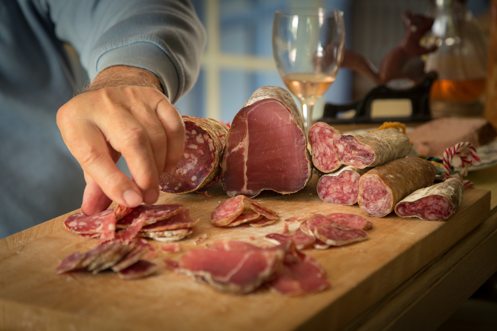

Nos ateliers

Ateliers dégustation
Au cours de ces ateliers dégustation, nous vous proposons de découvrir nos nouveautés ainsi que des accords saucissons et vins.
Voir les disponibilités
Visites guidées
Nos locaux de production ouvrent leurs portes toutes les semaines afin de vous faire découvrir notre savoir-faire et répondre à vos interrogations.
Voir les disponibilitésLes derniers avis